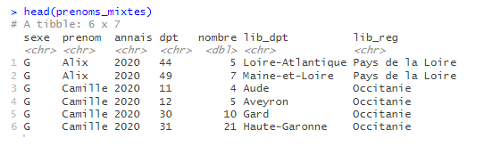
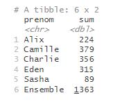
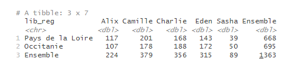
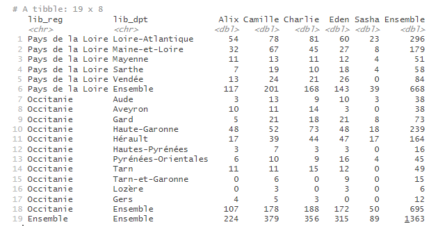
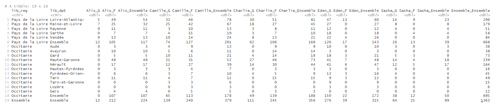
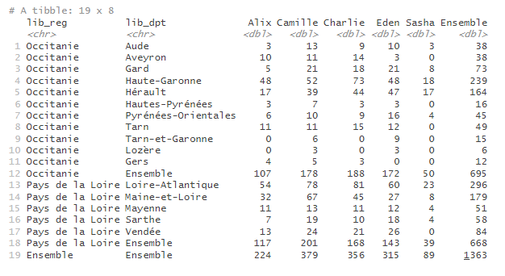
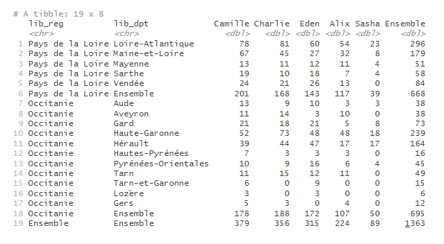
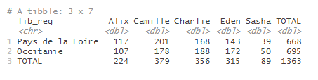

bb_creer_tableau_croise.Rmdtab_build() est la fonction principale à connaître du package tabloid : elle permet de calculer une statistique pour plusieurs croisements de variables, en intégrant automatiquement les différentes marges.
Elle prend en paramètres une data.frame contenant les données, les noms des variables à mettre en lignes et en colonnes, la variable d’intérêt et la statistique à calculer. Elle peut éventuellement prendre en paramètre une variable de pondération et un seuil pour le calcul d’un quantile précis.
La plus-value de cette fonction est surtout de calculer automatiquement les marges intermédiaires, pour faciliter les analyses.
tab_build() est le constructeur d’un objet de type tab : cet objet contient différents éléments qui pourront éventuellement être modifiés selon les appels ultérieurs des fonctions tab_pct(), tab_round() ou tab_mask().
La structure du tableau sera donnée par les variables qualitatives listées dans var_rows (pour les lignes) et var_cols (pour les colonnes). Ces variables doivent être de type character ou factor.
Les noms des variables sont à renseigner sans quote. Il est possible de renseigner plusieurs variables, en les assemblant avec c(). La fonction peut gérer 0 à n variables en lignes et 0 à 2 variables en colonnes. Il est conseillé de ne pas dépasser 2 variables en lignes pour des raisons de lisibilité. Les marges seront calculées automatiquement.
Le coeur du tableau sera constitué du calcul d’une statistique usuelle (stat) sur une variable d’intérêt (var_stat).
Le paramètre stat précise la statistique à calculer. Il peut prendre les valeurs suivantes :
“mean” : moyenne
“median” : médiane
“count” : effectifs
“sum” : somme
“min”, “max” : minimum, maximum
“quantile” : quantile
“weighted_mean” : moyenne pondérée
“weighted_sum”: somme pondérée
Le paramètre var_stat indique sur quelle variable doit porter le calcul à effectuer. Il doit s’agir d’une variable présente dans la table de données. Ce paramètre est à renseigner sans quote.
La table des prénoms contient, pour chaque département, chaque prénom et chaque sexe, le nombre de naissances pour chaque année de 1900 à 2020. On crée pour l’exemple une table réduite contenant les données 2020 pour deux régions et un ensemble de prénoms mixtes.
library(tabloid)
library(dplyr)
prenoms_mixtes <- prenoms |>
filter(annais == "2020" &
prenom %in% c("Charlie", "Alix", "Eden", "Sasha", "Camille") &
lib_reg %in% c("Occitanie", "Pays de la Loire"))
On souhaite connaitre le nombre de naissances, pour chaque prénom, dans l’ensemble de ces deux régions. On peut renseigner ainsi la fonction tab_build() :
prenom dont les modalités donneront les lignes du tableau finalnombre dont on veut connaitre la somme pour chaque modalité de prenom
nombre, ici une somme ("sum")
prenoms_mixtes |>
tab_build(var_rows = prenom,
var_stat = nombre,
stat = "sum")
Pour connaitre la répartition des naissances dans chacune des deux régions, on peut croiser la variable prenom avec la variable lib_reg contenant les libellés de région. On renseigne, par exemple, une variable en ligne et l’autre en colonne :
prenoms_mixtes |>
tab_build(var_rows = lib_reg,
var_cols = prenom,
var_stat = nombre,
stat = "sum")
Pour ajouter le détail par département, on renseigne une deuxième variable dans le paramètre var_rows, de la façon suivante :
prenoms_mixtes |>
tab_build(var_rows = c(lib_reg, lib_dpt),
var_cols = prenom,
var_stat = nombre,
stat = "sum")
De la même façon, il est possible d’ajouter une deuxième variable en colonne, pour avoir le détail des naissances par prénom et par sexe :
prenoms_mixtes |>
tab_build(var_rows = c(lib_reg, lib_dpt),
var_cols = c(prenom, sexe),
var_stat = nombre,
stat = "sum")
Remarque : si les variables utilisées pour définir les lignes et les colonnes sont de type character, l’ordre des modalités de ces variables dans le tableau sera celui d’apparition dans la table de données. Pour éviter ce comportement prédéfini et personnaliser l’ordre des modalités dans le tableau en sortie, l’utilisateur peut au préalable convertir la variable en facteur avec la fonction
factor(), en précisant l’ordre des niveaux avec le paramètrelevels, comme dans les exemples ci-dessous.
# recodage de la variable région, pour que les lignes Occitanie apparaissent en premier
prenoms_mixtes |>
mutate(lib_reg = factor(lib_reg, levels = c("Occitanie", "Pays de la Loire"))) |>
tab_build(var_rows = c(lib_reg, lib_dpt),
var_cols = prenom,
var_stat = nombre,
stat = "sum")
# recodage de la variable prenom, pour modifier l'ordre des colonnes
prenoms_mixtes |>
mutate(prenom = factor(prenom, levels = c("Camille", "Charlie", "Eden", "Alix", "Sasha"))) |>
tab_build(var_rows = c(lib_reg, lib_dpt),
var_cols = prenom,
var_stat = nombre,
stat = "sum")
Le paramètre lab_total permet de modifier l’intitulé des lignes ou colonnes correspondant aux différents totaux et sous-totaux. Il vaut par défaut “Ensemble” ; on peut le modifier en renseignant une chaîne de caractères.
prenoms_mixtes |>
tab_build(var_rows = lib_reg,
var_cols = prenom,
var_stat = nombre,
stat = "sum",
lab_total = "TOTAL")
Le paramètre var_w permet d’indiquer, si besoin, la variable de pondération à utiliser pour calculer une somme pondérée ou une moyenne pondérée (stat = “weighted_sum” ou stat = “weighted_mean”). Il doit s’agir d’une variable présente dans la table de données. Ce paramètre est à renseigner sans quote.